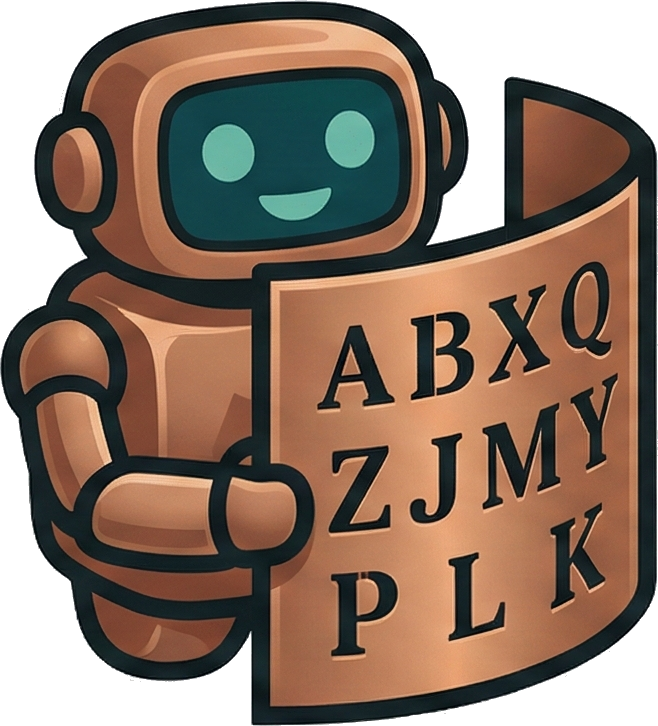

KryptosBot
An open-source computational analysis of Kryptos K4
temporarily offline
The site is offline while the server relocates.
kryptosbot.com is self-hosted on a single machine, and that machine is being physically moved. It will be back once it is set up on a stable connection again.
Nothing is lost. The site is generated from data held in the project's public research repository, so everything it published is still readable there.
Go to the research repository →What the site published, and where to read it now
-
Current K4 position
The authoritative status report, including the explicit non-claim statement. -
What has been eliminated
The tier framework. Per-experiment records live inexhaustion_log.json. -
Open research questions
RQ-1 through RQ-13, the live question surface. -
Submit a theory or report an error
The automated novelty check ran in the site's API, so submissions are read by hand until it returns.
The interactive workbench has no offline equivalent. It is a browser application served by the site, and it returns with it.